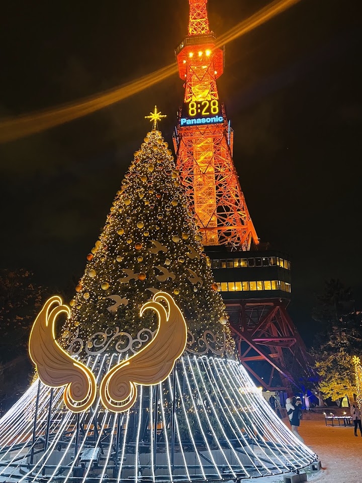
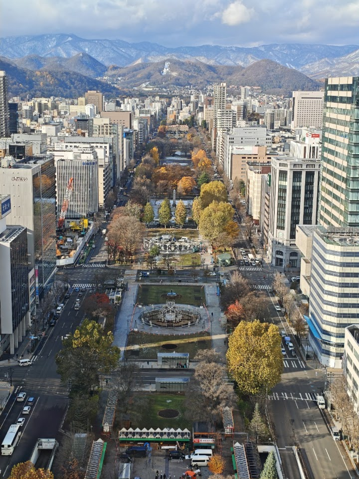
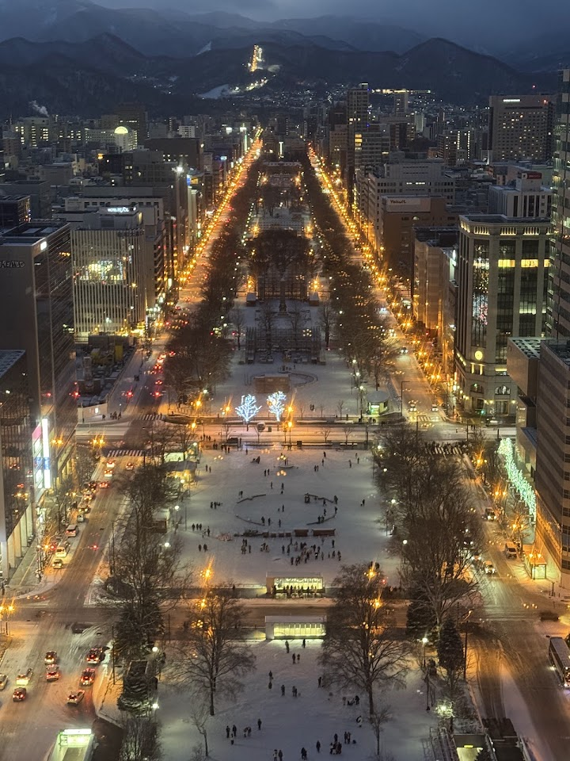
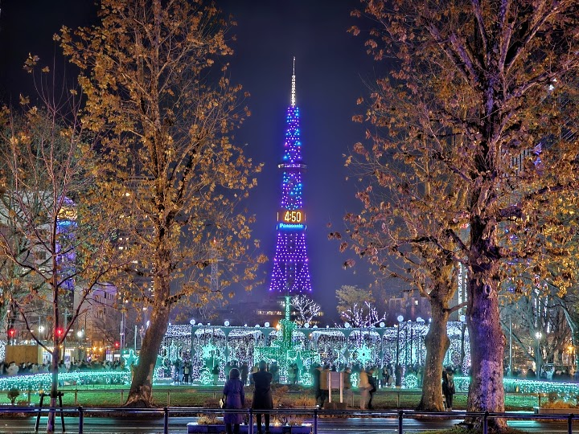
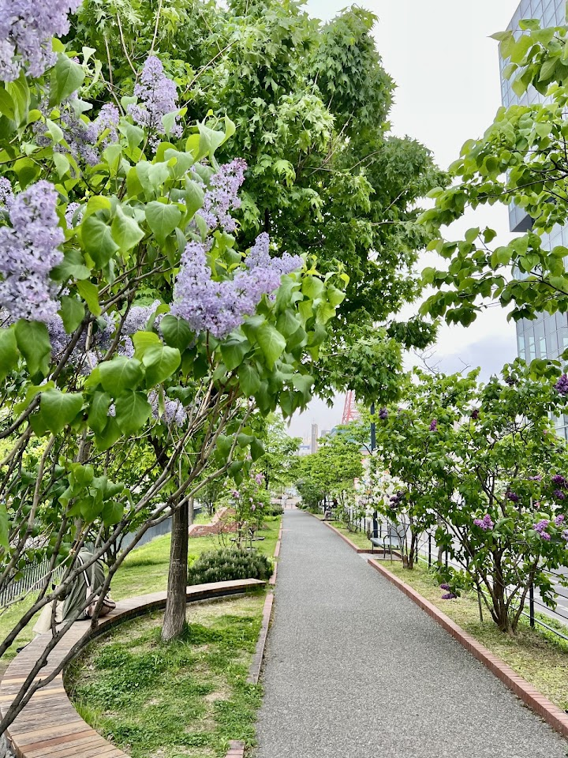

Odori Park (suggested)
Open in Google Maps (street view, more photos and reviews there)






Visitor tips on finding it and getting there
My visit to Odori Park in July was one of the highlights of my time in Sapporo. Located right in the heart of the city, this beautiful green space is home to the iconic Sapporo TV Tower and serves as a vibrant gathering place for both locals and visitors alike. The park is incredibly easy to access from anywhere in Chuo Ward, making it the perfect spot to relax, take a leisurely stroll, or simply soak in the lively atmosphere. During the summer months, Hokkaido's natural beauty is on full display, with colourful flowers, lush greenery, and pleasant weather creating a truly picturesque setting
A beautiful and lively boulevard. Fortunately, the traffic around it is not too heavy, so it does not really disturb the peaceful atmosphere. There are charming flower gardens, small pools, and plenty of the simple, pleasant aesthetics that Japan does so well. This is not a grand or spectacular park, but rather a very enjoyable place to slow down, rest, and take in the long view stretching between the TV Tower and the far end of the park. More than anything, it is a beautiful urban vista. There are also a few stands around the area selling ice cream and light snacks. One of the nicest thin
🌻⛲️ A morning walk through Odori Park in Sapporo. Even under a slightly cloudy sky, the view of the Sapporo TV Tower beyond the fountain was beautiful. 📸✨ The park was filled with colorful flower beds and cheerful sunflowers, creating a refreshing green space right in the middle of the city. Walking slowly while listening to the sound of the fountain made for a very peaceful start to the day. 😊 A simple but beautiful Sapporo moment. 📍Odori Park & Sapporo TV Tower #OdoriPark #SapporoTVTower #Sapporo #Hokkaido #JapanTravel #SapporoTravel #MorningWalk #Sunflowers #CityPark #TravelJapan #Hokk